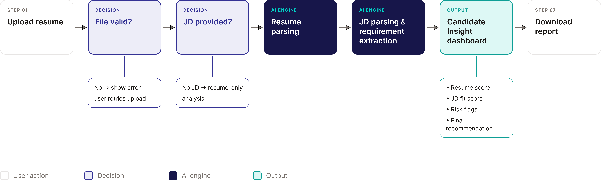
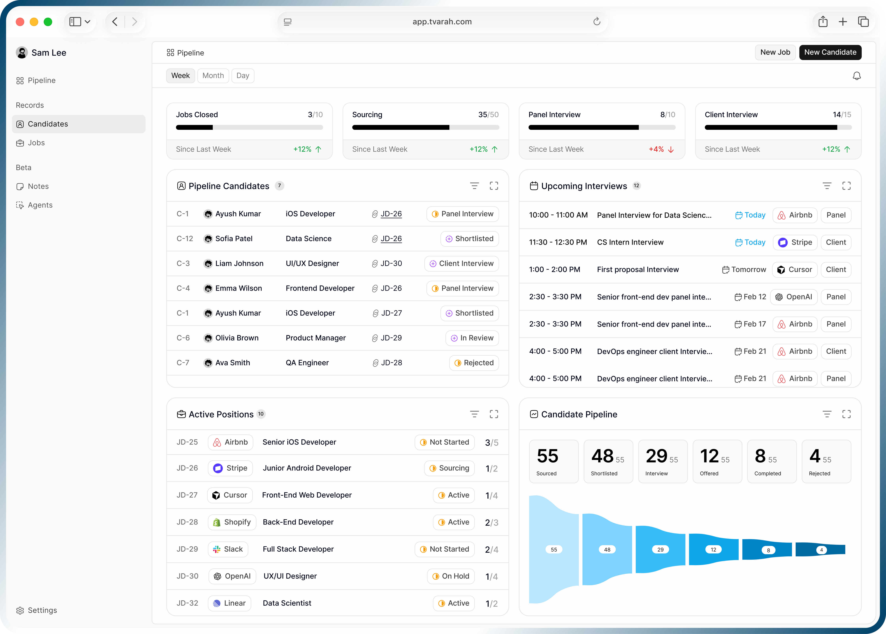
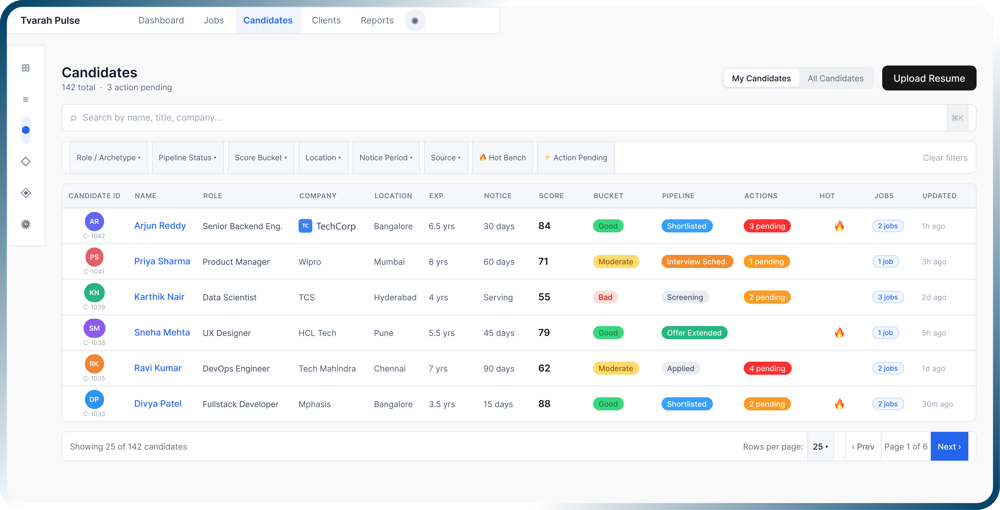
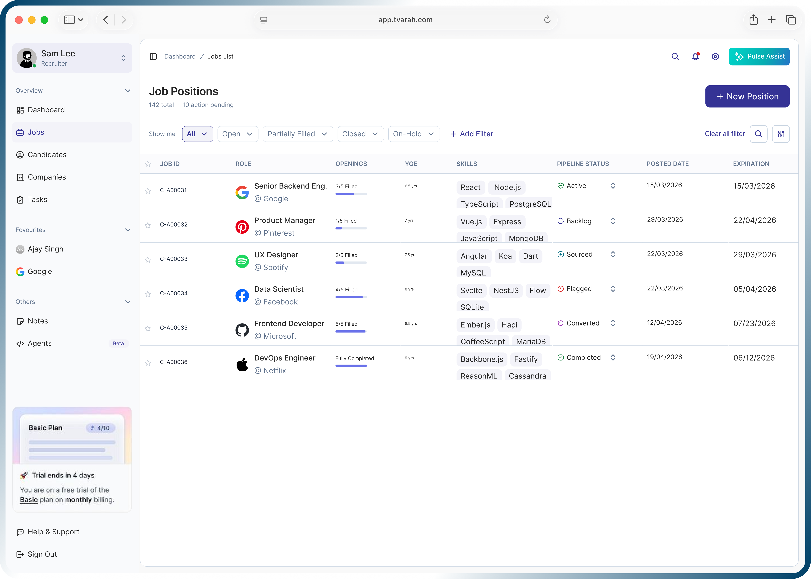
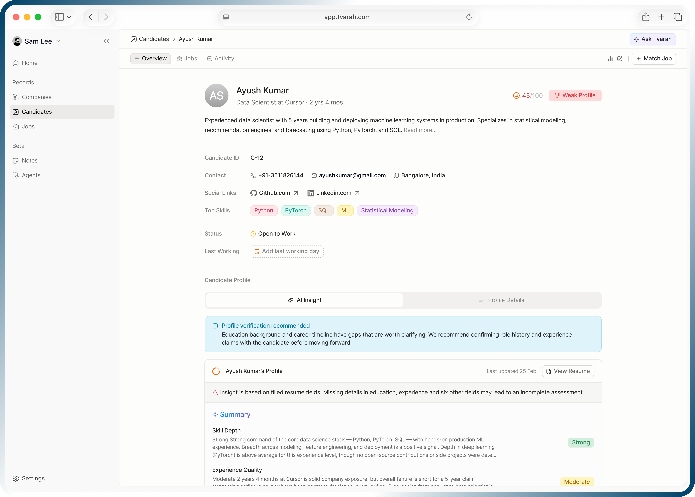
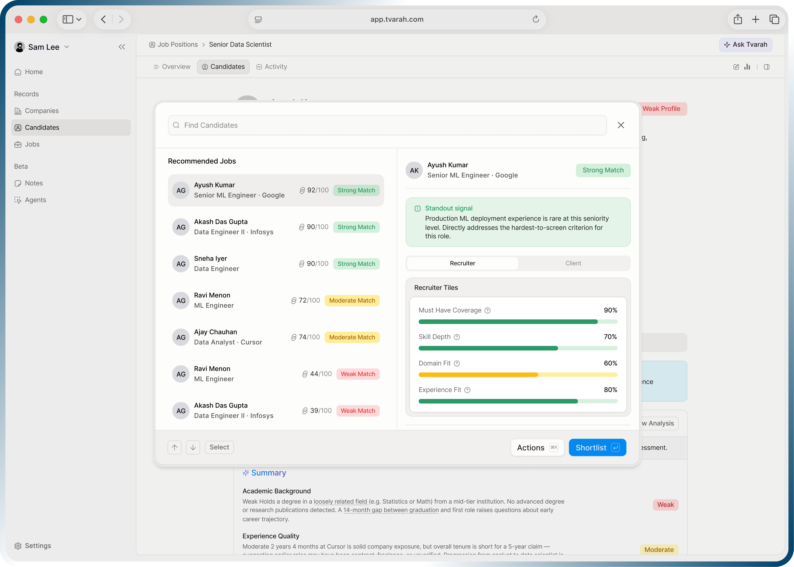
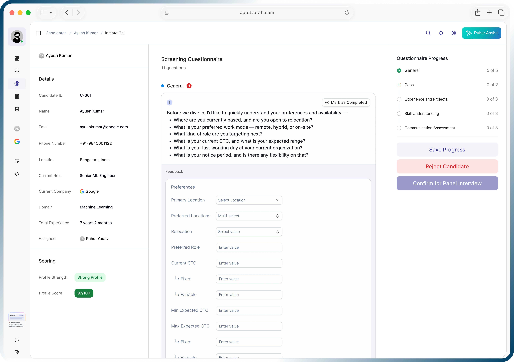
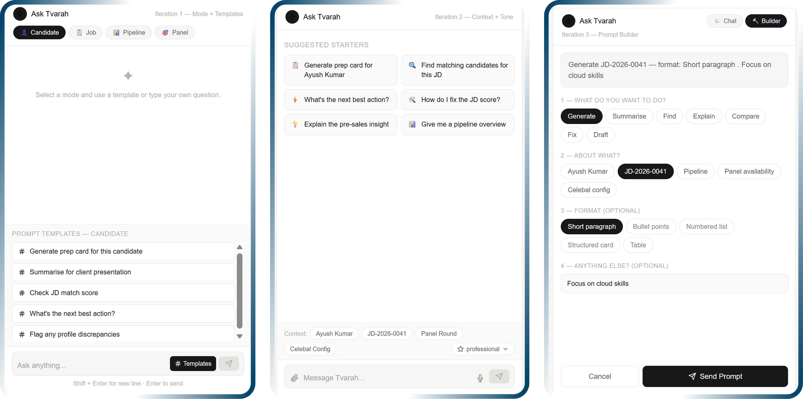
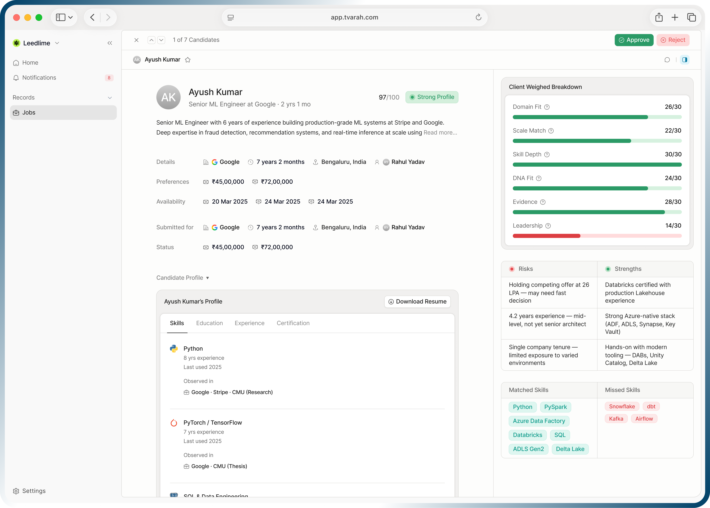

Tvarah Pulse
An AI hiring workspace for recruitment agencies. I designed it end to end, from recruiter research to a working prototype.
1 hire, 5 places.
Agency recruiters run every hire across spreadsheets, job portals, email, chat and notes. Nothing is connected, so checking one candidate can take most of the day.
What the market does.
I benchmarked 12 hiring products on positioning, AI features, trust signals and candidate flows, then scanned their interfaces for patterns worth reusing.
How might we help a recruiter go from a pile of resumes to a confident shortlist in minutes?
Recruiters did not need more data. They needed a score they could trust and a clear next step.
Resume in, decision out.
Every resume follows the same six steps, from upload to a recruiter decision. Step through them below.


8 modules, 1 workspace.
Each module answers one recruiter question. Pick a module to see the screen and the decisions behind it.








Research, define, design.
Six months with the founders, a PM and developers, from recruiter interviews to a design system built on shadcn/ui.